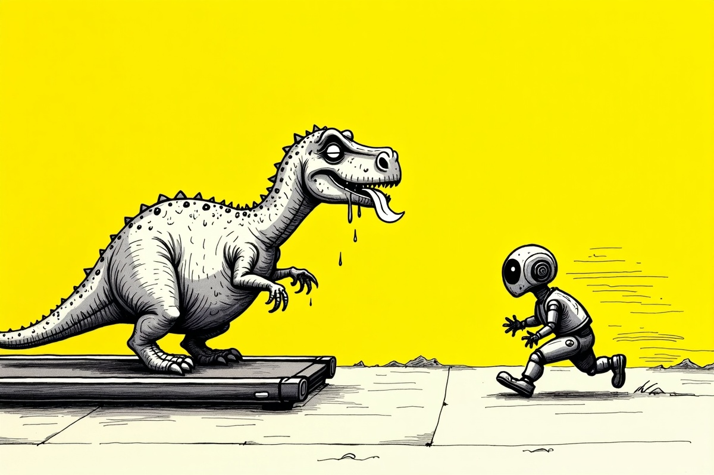

İlk yazı · 25 Temmuz 2026
Saniyede Milyar İşlem Yapan Bir Dünyada Nefes Almayı Hatırlamak
Geçen gün internetten bir yapay zekâ eğitimine katıldım. İki yıldır Komünite adında bir topluluğun içindeyim — girişimcilik ekosisteminde aktif rol alan, düzenli yapay zekâ eğitimleri veren bir topluluk. Ne zaman yeni bir eğitim açılsa oradayım. Yapay zekânın hayatımıza girmesinin üzerinden üç dört yıl geçti ve ben ilk günden beri, tek bir gelişmeyi bile kaçırmadan takip ediyorum.
İtiraf edeyim: başladığı zamanlarda bu teknolojiye burun kıvırmıştım. "Oyuncak bu" demiştim. O oyuncak, geçen gün, benim yıllarımı vererek öğrendiğim şeyleri saniyeler içinde önüme koydu.
Ekranın ışığı yüzüme vururken sandalyeye çöktüm. Kemiklerime kadar hissettiğim şeyi tek kelimeyle özetleyeyim: yetersizlik.
İşin komik tarafı şu: ben hayatını teknolojiden kazanan biriyim. Dünyada bu gelişmeleri benim kadar yakından takip eden insan sayısı, muhtemelen binde birden az. İstatistiksel olarak kendimi bir "öncü" falan hissetmem gerekirdi, değil mi?
Tam tersine. O eğitimin ortasında kendimi, fiber optik kablolarla koşu yarışına girmiş, nefes nefese kalmış bir dinozor gibi hissettim. Makine her hafta yeni bir sürümle güncelleniyor; ben o hıza yetişemediğim için resmen kendi biyolojimden utanıyorum. Düşünebiliyor musunuz?

O "error veren" anın içinde, bu yavaşlama meselesine neden bu kadar kafa yorduğumu bir kez daha anladım.
Bizim en büyük hatamız şu: kalp atışımızı işlemcinin saat hızına senkronlamaya çalışıyoruz. Oysa insan beyninin, her salise değişen bir teknolojiye aynı hızda yetişme kapasitesi yok. Biz etten, kemikten ve — ne yazık ki — sınırları olan bir sinir sisteminden ibaretiz.
Makine hızlanabilir. Bu onun doğası; hızlansın. Sorun makinenin hızında değil, o hızı bir başarı ölçütü sanıp kendimize dayatmamızda.
Koşu bandında ne kadar hızlı koşarsan koş, vardığın yer hep aynı: bulunduğun yer.
Meğer yalnız değilmişim
Bu kafa karışıklığıyla internette dolaşırken, bu hissin sadece benim zihnimde oluşmadığını fark ettim. Hatta çağların filozoflarının bile bu konuya kafa patlattığını, binlerce yılda kütüphaneler dolusu bir külliyat bıraktıklarını gördüm. Seneca'dan Platon'a, Epikuros'tan günümüz düşünürü Hartmut Rosa'ya kadar pek çok insan, hayatın hızı ile insanın varoluş hızı arasındaki ilişkiyi araştırmış, söyleyecek sözü olmuş.
Bu durum fazlasıyla ilgimi çekti. Ve bu yaşam felsefesini araştırmaya karar verdim.
Bir yazılımcı bir şeye karar verdiğinde ne yapar? Tabii ki ilk iş, o işle ilgili bir web sitesi açtım: Hiçbir Yere Yetişmeyenler Kulübü (notimetohurry.com). Kulübün şu anki tek üyesi benim. Burada hızımı bilinçli olarak yavaşlatırken karşılaştığım, öğrendiğim şeyleri hem bu sitede hem LinkedIn'de paylaşıyorum.
Ticari bir amacım yok. Gizli bir ajandam yok. Büyük iddialarım yok.
"Bâkî kalan bu kubbede bir hoş sadâ" bırakmak gibi bir niyetim bile yok açıkçası. Bu siteyi öylece bir seyir defteri gibi dolduruyorum işte. Bakarsınız ileride güzel bir şey çıkar ortaya; çıkmazsa da sorun değil. Nasılsa yetişecek bir yerim yok.
Bu yazının arkasındaki fikirlere merak duyarsan: sakin yaşamdan ne anladığımızı anlattığım sayfaya göz atabilirsin. Acele yok.